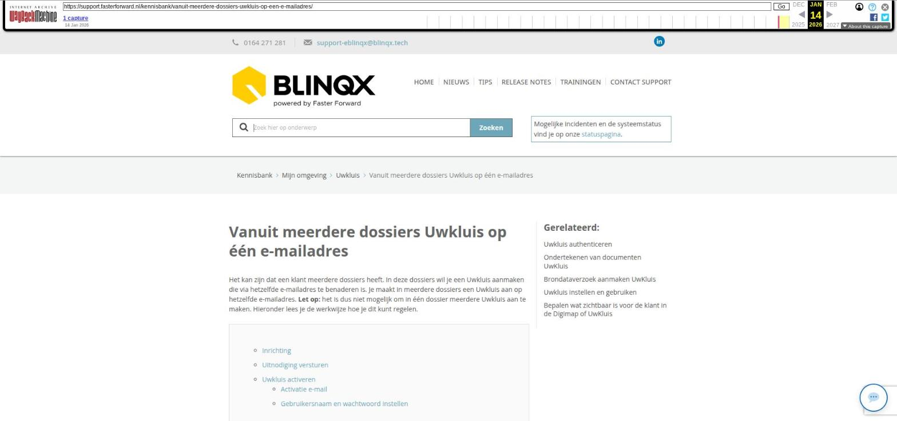

Levensverzekering aanmaken en beheren (case)

Tekstinhoud
Title: Levensverzekering aanmaken en beheren (case) - Faster Forward Support
URL: https://web.archive.org/web/20221002090525/https://support.fasterforward.nl/kennisbank/case-levensverzekering/
Source element: <article>
---
Levensverzekering aanmaken en beheren (case)
Hoe ga je om met jouw nieuwe werkwijze?
Bij de oplevering van jouw Elementsomgeving heeft de desbetreffende consultant jouw nieuwe werkwijze voor een levensverzekering doorgenomen.
Hieronder vind je een uitgebreide uitleg over deze werkwijze.
1. Dossier aanmaken
Een nieuwe klant/prospect belt om een afspraak met jou te maken, wat nu?
Log in op jouw Elementsomgeving. Ga naar 'zoek een dossier' en zoek (ter controle) de klant. Indien deze nog niet in jouw Elementsomgeving bestaat klik je op 'Nieuw dossier aanmaken'.
Maak het dossier voor de klant aan en vul hierbij zo veel mogelijk gegevens in om het dossier zo compleet mogelijk te maken. En maak de afspraak inclusief afspraakbevestiging aan. De klant is nu een 'prospect'.
2. Maak een dienst aan
Iedere prospect krijgt een dossier in Elements met daarin een dienst welke aangeeft wat voor soort advies de klant wenst.
Ga naar het dossier, klik op 'Nieuw product' en selecteer hier 'dienst'.
Vul de productkaart zo volledig mogelijk in en maak ten minste 1 rechterdeel aan.
Klik vervolgens op de pijl achter de status om de workflow door te lopen.
Selecteer in de workflow welke stukkenlijst er aangemaakt dient te worden behorend bij het profiel van de klant.
Daarna klik je nogmaals op de workflow om de activatielink voor de Digimap naar de klant te sturen.
3. Communicatie registreren
Na elk klantcontact (gesprek of telefoontje) zolang de klant nog prospect is, geef je via de workflow onder de dienst aan wat de opvolging moet zijn.
Daarbij is het mogelijk om een gespreksverslag naar de klant te mailen en een opvolgingstaak voor de adviseur aan te maken.
Het is belangrijk om alle klantcontact te registreren in het dossier en de stappen in de workflow door te lopen indien dit nodig is.
4. Levensverzekering aanmaken
In de meeste gevallen wordt de levensverzekering aangemaakt middels een HDN (LX)bericht vanuit jouw adviespakket.
Zodra de prospect klant wordt en er een levensverzekering aangevraagd dient te worden, dan begin je de aanvraag vanuit Elements.
Exporteer eerst het klantdossier van Elements naar jouw adviessoftware, maak vervolgens in jouw adviessoftware het advies aan en verstuur deze naar Elements door als inkoopcombinatie FasterForward Elements te kiezen. Dit bericht komt binnen in de HDN inbox op de startpagina van jouw Elementsomgeving.
Vul daar het bericht aan. Vervolgens wordt het product (de levensverzekering) aangemaakt in het dossier. Klik op de levensverzekering om direct naar het klantdossier te gaan. Door de workflow onder de levensverzekering door te lopen krijg je de optie om de aanvraag via HDN via Elements naar de maatschappij te versturen.
5. Afhandeling
De volledige afhandeling van de verzekering gaat daarna workflow gestuurd waarbij de workflow kan reageren op de HDN berichten van de maatschappij.
Laatste update: 7 juli 2022
Tagged: case, levensverzekering, nieuwe verzekering, overlijdensrisicoverzekering, starten, verzekering
Was deze informatie nuttig?
Ja Nee